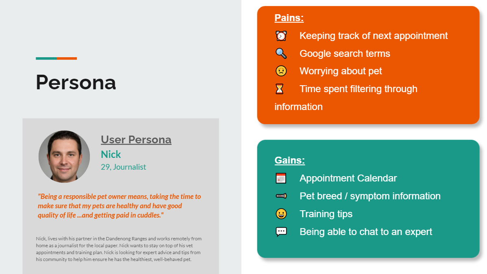
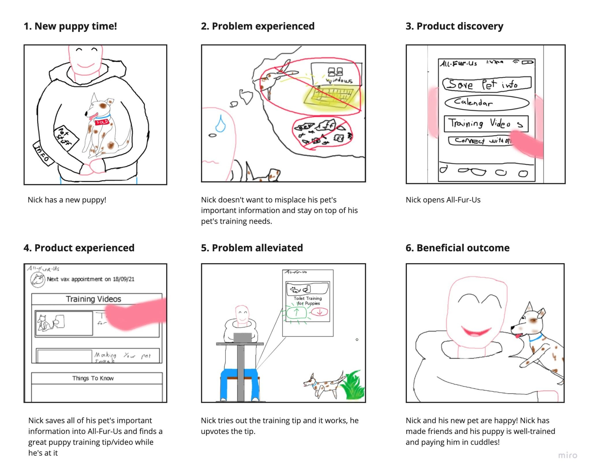
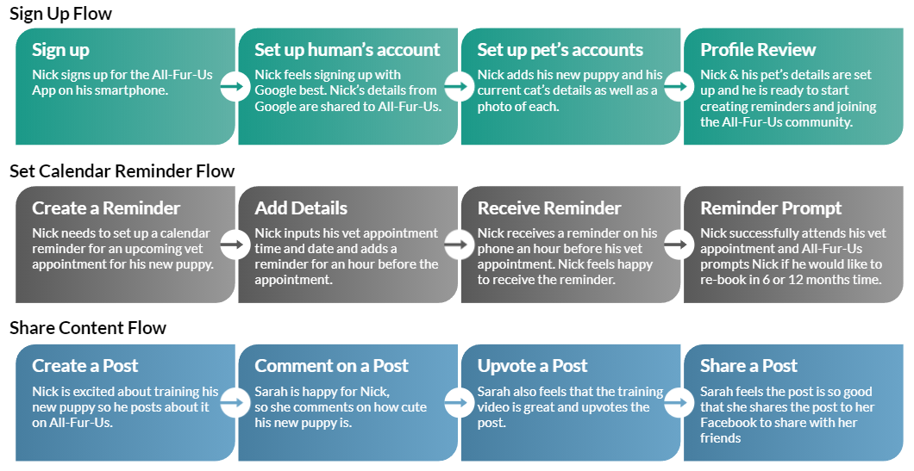
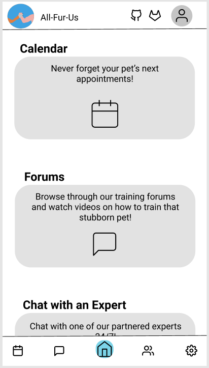
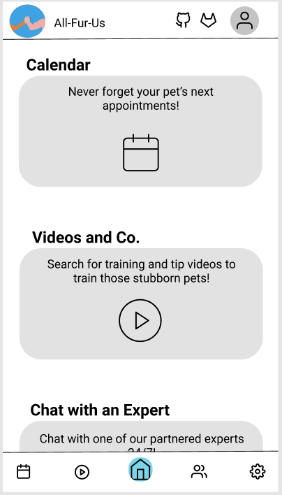
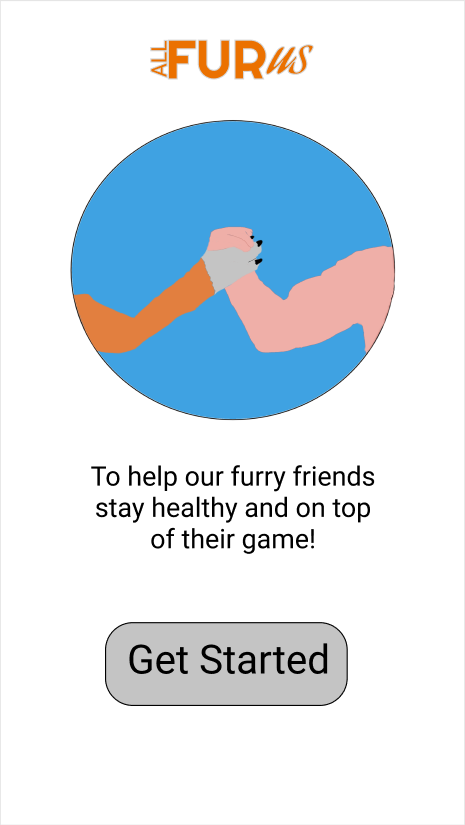
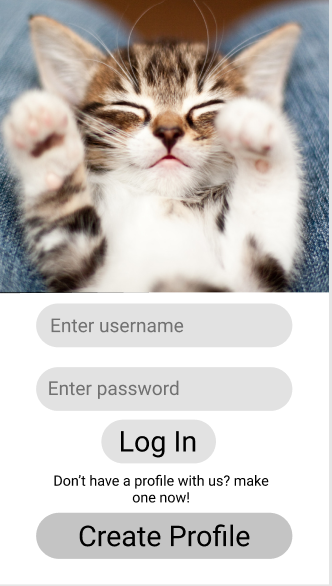

Cameron Slaven
All-Fur-Us
OVERVIEW
Team
- Cameron Slaven
- Samara Leung
- Project Management
- UX Researcher
- UI Designer
The Problem
Our goal was to positively improve pet owner’s day-to-day experience, by offering All-Fur-Us, an app that enables calendar reminders, expert chat support and the ability to contribute and connect with an online community.
The Solution
Over the course of three weeks, we researched and designed the three core features for All-Fur-Us. Through a mixture of user interviews, iterative, prototyping and testing, we created a conceptual idea to deliver a valuable tool for new & current dog and cat owners.
RESEARCH & FINDINGS
We started by interviewing pet owners about their experiences with pet companionship. We wanted to know their general pain points and we focused in on their day-to-day pet needs and routines.
We conducted an instagram survey and also referenced a comprehensive 2019 survey on pet ownership in Australia. These quantitative results backed up our findings from our user interviews and also directed our User Persona development.
PERSONA
THE PROBLEM
New and current pet owners need to be able to organise and be reminded of pet health & vet appointments and connect with other like-minded pet owners because it can be hard to stay on top of all of the needs of a pet.
How might we build All-Fur-Us so that it allows pet owners to be successful at keeping track of appointments and connecting with others to share pet information using our pet app?
- Pet owners can find it difficult to stay up-to-date on all their pet’s needs/requirements
- This can include when pets should be vaccinated, when they should see a vet, at what age they should be desexed, etc.
STORYBOARD
CHOSEN FEATURES
We explored various ideas about what features should be included in All-Fur-Us and how we would get our users to engage with it.
After completing our research we found our users needs included:
- Calendar / Reminders
- 24/7 Vet Chat Support
- Connecting with Community
- Information Repository Search
USER JOURNEY FLOWS
ITERATIONS
 FINAL PROTOTYPE
 FINAL THOUGHTS
- Working as a team we were able to find that there are varying degrees of the following functions available to users already, including; calendar reminders, community video content and vet chat. However, there is no pet specific apps out in the market today that engages in all three functions.
- This project was built on finding a need and filling it. After researching we learned that even the best pet specific product might not be taken up by users as they are so ingrained to use several available solutions such as Google, Youtube and Reddit.
- Further research and experimentation is needed to ensure the user’s needs are being met and to improve user experience.
- Further capitalisation on user research results may be necessary for the success of the project, such as connecting the app to existing services that are already used such as Google Calendar.